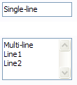
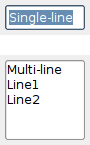
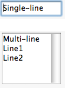

| Version: 2.9.4 |
#include </home/zeitlin/src/wx/github/interface/wx/textctrl.h>
 Inheritance diagram for wxTextCtrl:
Inheritance diagram for wxTextCtrl:テキストの表示と編集が可能なテキストコントロール。
It may be single line or multi-line. Notice that a lot of methods of the text controls are found in the base wxTextEntry class which is a common base class for wxTextCtrl and other controls using a single line text entry field (e.g. wxComboBox).
This class supports the following styles:
wxEVT_COMMAND_TEXT_ENTER (otherwise pressing Enter key is either processed internally by the control or used for navigation between dialog controls). wxEVT_CHAR events for TAB pressed - normally, TAB is used for passing to the next control in a dialog instead. For the control created with this style, you can still use Ctrl-Enter to pass to the next control from the keyboard. Note that alignment styles (wxTE_LEFT, wxTE_CENTRE and wxTE_RIGHT) can be changed dynamically after control creation on wxMSW and wxGTK. wxTE_READONLY, wxTE_PASSWORD and wrapping styles can be dynamically changed under wxGTK but not wxMSW. The other styles can be only set during control creation.
The multiline text controls always store the text as a sequence of lines separated by '\n' characters, i.e. in the Unix text format even on non-Unix platforms. This allows the user code to ignore the differences between the platforms but at a price: the indices in the control such as those returned by GetInsertionPoint() or GetSelection() can not be used as indices into the string returned by GetValue() as they're going to be slightly off for platforms using "\\r\\n" as separator (as Windows does).
Instead, if you need to obtain a substring between the 2 indices obtained from the control with the help of the functions mentioned above, you should use GetRange(). And the indices themselves can only be passed to other methods, for example SetInsertionPoint() or SetSelection().
To summarize: never use the indices returned by (multiline) wxTextCtrl as indices into the string it contains, but only as arguments to be passed back to the other wxTextCtrl methods. This problem doesn't arise for single-line platforms however where the indices in the control do correspond to the positions in the value string.
Multi-line text controls support styling, i.e. provide a possibility to set colours and font for individual characters in it (note that under Windows wxTE_RICH style is required for style support). To use the styles you can either call SetDefaultStyle() before inserting the text or call SetStyle() later to change the style of the text already in the control (the first solution is much more efficient).
In either case, if the style doesn't specify some of the attributes (for example you only want to set the text colour but without changing the font nor the text background), the values of the default style will be used for them. If there is no default style, the attributes of the text control itself are used.
So the following code correctly describes what it does: the second call to SetDefaultStyle() doesn't change the text foreground colour (which stays red) while the last one doesn't change the background colour (which stays grey):
text->SetDefaultStyle(wxTextAttr(*wxRED)); text->AppendText("Red text\n"); text->SetDefaultStyle(wxTextAttr(wxNullColour, *wxLIGHT_GREY)); text->AppendText("Red on grey text\n"); text->SetDefaultStyle(wxTextAttr(*wxBLUE); text->AppendText("Blue on grey text\n");
This class multiply-inherits from std::streambuf (except for some really old compilers using non-standard iostream library), allowing code such as the following:
wxTextCtrl *control = new wxTextCtrl(...); ostream stream(control) stream << 123.456 << " some text\n"; stream.flush();
Note that even if your compiler doesn't support this (the symbol wxHAS_TEXT_WINDOW_STREAM has value of 0 then) you can still use wxTextCtrl itself in a stream-like manner:
wxTextCtrl *control = new wxTextCtrl(...); *control << 123.456 << " some text\n";
However the possibility to create an ostream associated with wxTextCtrl may be useful if you need to redirect the output of a function taking an ostream as parameter to a text control.
Another commonly requested need is to redirect std::cout to the text control. This may be done in the following way:
#include <iostream> wxTextCtrl *control = new wxTextCtrl(...); std::streambuf *sbOld = std::cout.rdbuf(); std::cout.rdbuf(control); // use cout as usual, the output appears in the text control ... std::cout.rdbuf(sbOld);
But wxWidgets provides a convenient class to make it even simpler so instead you may just do
#include <iostream> wxTextCtrl *control = new wxTextCtrl(...); wxStreamToTextRedirector redirect(control); // all output to cout goes into the text control until the exit from // current scope
See wxStreamToTextRedirector for more details.
The following commands are processed by default event handlers in wxTextCtrl: wxID_CUT, wxID_COPY, wxID_PASTE, wxID_UNDO, wxID_REDO. The associated UI update events are also processed automatically, when the control has the focus.
The following event handler macros redirect the events to member function handlers 'func' with prototypes like:
Event macros for events emitted by this class:
wxEVT_COMMAND_TEXT_UPDATED event, generated when the text changes. Notice that this event will be sent when the text controls contents changes -- whether this is due to user input or comes from the program itself (for example, if wxTextCtrl::SetValue() is called); see wxTextCtrl::ChangeValue() for a function which does not send this event. This event is however not sent during the control creation. wxEVT_COMMAND_TEXT_ENTER event, generated when enter is pressed in a text control which must have wxTE_PROCESS_ENTER style for this event to be generated. |  |  |  |
| wxMSW appearance | wxGTK appearance | wxMac appearance |
Public Member Functions | |
| wxTextCtrl () | |
| Default ctor. | |
| wxTextCtrl (wxWindow *parent, wxWindowID id, const wxString &value=wxEmptyString, const wxPoint &pos=wxDefaultPosition, const wxSize &size=wxDefaultSize, long style=0, const wxValidator &validator=wxDefaultValidator, const wxString &name=wxTextCtrlNameStr) | |
| Constructor, creating and showing a text control. | |
| virtual | ~wxTextCtrl () |
| Destructor, destroying the text control. | |
| bool | Create (wxWindow *parent, wxWindowID id, const wxString &value=wxEmptyString, const wxPoint &pos=wxDefaultPosition, const wxSize &size=wxDefaultSize, long style=0, const wxValidator &validator=wxDefaultValidator, const wxString &name=wxTextCtrlNameStr) |
| Creates the text control for two-step construction. | |
| virtual void | Cut () |
| Copies the selected text to the clipboard and removes the selection. | |
| virtual void | DiscardEdits () |
| Resets the internal modified flag as if the current changes had been saved. | |
| virtual bool | EmulateKeyPress (const wxKeyEvent &event) |
| This function inserts into the control the character which would have been inserted if the given key event had occurred in the text control. | |
| virtual const wxTextAttr & | GetDefaultStyle () const |
| Returns the style currently used for the new text. | |
| virtual int | GetLineLength (long lineNo) const |
| Gets the length of the specified line, not including any trailing newline character(s). | |
| virtual wxString | GetLineText (long lineNo) const |
| Returns the contents of a given line in the text control, not including any trailing newline character(s). | |
| virtual int | GetNumberOfLines () const |
| Returns the number of lines in the text control buffer. | |
| virtual bool | GetStyle (long position, wxTextAttr &style) |
| Returns the style at this position in the text control. | |
| virtual bool | IsModified () const |
| Returns true if the text has been modified by user. | |
| bool | IsMultiLine () const |
| Returns true if this is a multi line edit control and false otherwise. | |
| bool | IsSingleLine () const |
| Returns true if this is a single line edit control and false otherwise. | |
| bool | LoadFile (const wxString &filename, int fileType=wxTEXT_TYPE_ANY) |
| Loads and displays the named file, if it exists. | |
| virtual void | MarkDirty () |
| Mark text as modified (dirty). | |
| void | OnDropFiles (wxDropFilesEvent &event) |
| This event handler function implements default drag and drop behaviour, which is to load the first dropped file into the control. | |
| virtual bool | PositionToXY (long pos, long *x, long *y) const |
| Converts given position to a zero-based column, line number pair. | |
| wxPoint | PositionToCoords (long pos) const |
| Converts given text position to client coordinates in pixels. | |
| bool | SaveFile (const wxString &filename=wxEmptyString, int fileType=wxTEXT_TYPE_ANY) |
| Saves the contents of the control in a text file. | |
| virtual bool | SetDefaultStyle (const wxTextAttr &style) |
| Changes the default style to use for the new text which is going to be added to the control using WriteText() or AppendText(). | |
| void | SetModified (bool modified) |
| Marks the control as being modified by the user or not. | |
| virtual bool | SetStyle (long start, long end, const wxTextAttr &style) |
| Changes the style of the given range. | |
| virtual void | ShowPosition (long pos) |
| Makes the line containing the given position visible. | |
| virtual long | XYToPosition (long x, long y) const |
| Converts the given zero based column and line number to a position. | |
| wxTextCtrlHitTestResult | HitTest (const wxPoint &pt, long *pos) const |
| This function finds the character at the specified position expressed in pixels. | |
| wxTextCtrlHitTestResult | HitTest (const wxPoint &pt, wxTextCoord *col, wxTextCoord *row) const |
| This function finds the character at the specified position expressed in pixels. | |
| wxTextCtrl & | operator<< (const wxString &s) |
| Operator definitions for appending to a text control. | |
| wxTextCtrl & | operator<< (int i) |
| Operator definitions for appending to a text control. | |
| wxTextCtrl & | operator<< (long i) |
| Operator definitions for appending to a text control. | |
| wxTextCtrl & | operator<< (float f) |
| Operator definitions for appending to a text control. | |
| wxTextCtrl & | operator<< (double d) |
| Operator definitions for appending to a text control. | |
| wxTextCtrl & | operator<< (char c) |
| Operator definitions for appending to a text control. | |
| wxTextCtrl & | operator<< (wchar_t c) |
| Operator definitions for appending to a text control. | |
| wxTextCtrl::wxTextCtrl | ( | ) |
Default ctor.
| wxTextCtrl::wxTextCtrl | ( | wxWindow * | parent, |
| wxWindowID | id, | ||
| const wxString & | value = wxEmptyString, |
||
| const wxPoint & | pos = wxDefaultPosition, |
||
| const wxSize & | size = wxDefaultSize, |
||
| long | style = 0, |
||
| const wxValidator & | validator = wxDefaultValidator, |
||
| const wxString & | name = wxTextCtrlNameStr |
||
| ) |
Constructor, creating and showing a text control.
| parent | Parent window. Should not be NULL. |
| id | Control identifier. A value of -1 denotes a default value. |
| value | Default text value. |
| pos | Text control position. |
| size | Text control size. |
| style | Window style. See wxTextCtrl. |
| validator | Window validator. |
| name | Window name. |
| virtual wxTextCtrl::~wxTextCtrl | ( | ) | [virtual] |
Destructor, destroying the text control.
| bool wxTextCtrl::Create | ( | wxWindow * | parent, |
| wxWindowID | id, | ||
| const wxString & | value = wxEmptyString, |
||
| const wxPoint & | pos = wxDefaultPosition, |
||
| const wxSize & | size = wxDefaultSize, |
||
| long | style = 0, |
||
| const wxValidator & | validator = wxDefaultValidator, |
||
| const wxString & | name = wxTextCtrlNameStr |
||
| ) |
Creates the text control for two-step construction.
This method should be called if the default constructor was used for the control creation. Its parameters have the same meaning as for the non-default constructor.
Reimplemented in wxSearchCtrl.
| virtual void wxTextCtrl::Cut | ( | ) | [virtual] |
Copies the selected text to the clipboard and removes the selection.
| virtual void wxTextCtrl::DiscardEdits | ( | ) | [virtual] |
Resets the internal modified flag as if the current changes had been saved.
| virtual bool wxTextCtrl::EmulateKeyPress | ( | const wxKeyEvent & | event | ) | [virtual] |
This function inserts into the control the character which would have been inserted if the given key event had occurred in the text control.
The event object should be the same as the one passed to EVT_KEY_DOWN handler previously by wxWidgets. Please note that this function doesn't currently work correctly for all keys under any platform but MSW.
| virtual const wxTextAttr& wxTextCtrl::GetDefaultStyle | ( | ) | const [virtual] |
Returns the style currently used for the new text.
| virtual int wxTextCtrl::GetLineLength | ( | long | lineNo | ) | const [virtual] |
Gets the length of the specified line, not including any trailing newline character(s).
| lineNo | Line number (starting from zero). |
| virtual wxString wxTextCtrl::GetLineText | ( | long | lineNo | ) | const [virtual] |
Returns the contents of a given line in the text control, not including any trailing newline character(s).
| lineNo | The line number, starting from zero. |
| virtual int wxTextCtrl::GetNumberOfLines | ( | ) | const [virtual] |
Returns the number of lines in the text control buffer.
The returned number is the number of logical lines, i.e. just the count of the number of newline characters in the control + 1, for wxGTK and wxOSX/Cocoa ports while it is the number of physical lines, i.e. the count of lines actually shown in the control, in wxMSW and wxOSX/Carbon. Because of this discrepancy, it is not recommended to use this function.
| virtual bool wxTextCtrl::GetStyle | ( | long | position, |
| wxTextAttr & | style | ||
| ) | [virtual] |
Returns the style at this position in the text control.
Not all platforms support this function.
| wxTextCtrlHitTestResult wxTextCtrl::HitTest | ( | const wxPoint & | pt, |
| long * | pos | ||
| ) | const |
This function finds the character at the specified position expressed in pixels.
The two overloads of this method allow to find either the position of the character, as an index into the text control contents, or its row and column.
If the return code is not wxTE_HT_UNKNOWN the row and column of the character closest to this position are returned, otherwise the output parameters are not modified.
Please note that this function is currently only implemented in wxUniv, wxMSW and wxGTK2 ports and always returns wxTE_HT_UNKNOWN in the other ports.
wxPerl Note: In wxPerl this function takes only the pt argument and returns a 3-element list (result, col, row).
| pt | The position of the point to check, in window device coordinates. |
| col | Receives the column of the character at the given position. May be NULL. |
| row | Receives the row of the character at the given position. May be NULL. |
| pos | Receives the position of the character at the given position. May be NULL. |
| wxTextCtrlHitTestResult wxTextCtrl::HitTest | ( | const wxPoint & | pt, |
| wxTextCoord * | col, | ||
| wxTextCoord * | row | ||
| ) | const |
This function finds the character at the specified position expressed in pixels.
The two overloads of this method allow to find either the position of the character, as an index into the text control contents, or its row and column.
If the return code is not wxTE_HT_UNKNOWN the row and column of the character closest to this position are returned, otherwise the output parameters are not modified.
Please note that this function is currently only implemented in wxUniv, wxMSW and wxGTK2 ports and always returns wxTE_HT_UNKNOWN in the other ports.
wxPerl Note: In wxPerl this function takes only the pt argument and returns a 3-element list (result, col, row).
| pt | The position of the point to check, in window device coordinates. |
| col | Receives the column of the character at the given position. May be NULL. |
| row | Receives the row of the character at the given position. May be NULL. |
| pos | Receives the position of the character at the given position. May be NULL. |
| virtual bool wxTextCtrl::IsModified | ( | ) | const [virtual] |
Returns true if the text has been modified by user.
Note that calling SetValue() doesn't make the control modified.
| bool wxTextCtrl::IsMultiLine | ( | ) | const |
Returns true if this is a multi line edit control and false otherwise.
| bool wxTextCtrl::IsSingleLine | ( | ) | const |
Returns true if this is a single line edit control and false otherwise.
| bool wxTextCtrl::LoadFile | ( | const wxString & | filename, |
| int | fileType = wxTEXT_TYPE_ANY |
||
| ) |
Loads and displays the named file, if it exists.
| filename | The filename of the file to load. |
| fileType | The type of file to load. This is currently ignored in wxTextCtrl. |
| virtual void wxTextCtrl::MarkDirty | ( | ) | [virtual] |
Mark text as modified (dirty).
| void wxTextCtrl::OnDropFiles | ( | wxDropFilesEvent & | event | ) |
This event handler function implements default drag and drop behaviour, which is to load the first dropped file into the control.
| event | The drop files event. |
| wxTextCtrl& wxTextCtrl::operator<< | ( | wchar_t | c | ) |
Operator definitions for appending to a text control.
These operators can be used as with the standard C++ streams, for example:
wxTextCtrl *wnd = new wxTextCtrl(my_frame); (*wnd) << "Welcome to text control number " << 1 << ".\n";
| wxTextCtrl& wxTextCtrl::operator<< | ( | const wxString & | s | ) |
Operator definitions for appending to a text control.
These operators can be used as with the standard C++ streams, for example:
wxTextCtrl *wnd = new wxTextCtrl(my_frame); (*wnd) << "Welcome to text control number " << 1 << ".\n";
| wxTextCtrl& wxTextCtrl::operator<< | ( | float | f | ) |
Operator definitions for appending to a text control.
These operators can be used as with the standard C++ streams, for example:
wxTextCtrl *wnd = new wxTextCtrl(my_frame); (*wnd) << "Welcome to text control number " << 1 << ".\n";
| wxTextCtrl& wxTextCtrl::operator<< | ( | double | d | ) |
Operator definitions for appending to a text control.
These operators can be used as with the standard C++ streams, for example:
wxTextCtrl *wnd = new wxTextCtrl(my_frame); (*wnd) << "Welcome to text control number " << 1 << ".\n";
| wxTextCtrl& wxTextCtrl::operator<< | ( | char | c | ) |
Operator definitions for appending to a text control.
These operators can be used as with the standard C++ streams, for example:
wxTextCtrl *wnd = new wxTextCtrl(my_frame); (*wnd) << "Welcome to text control number " << 1 << ".\n";
| wxTextCtrl& wxTextCtrl::operator<< | ( | int | i | ) |
Operator definitions for appending to a text control.
These operators can be used as with the standard C++ streams, for example:
wxTextCtrl *wnd = new wxTextCtrl(my_frame); (*wnd) << "Welcome to text control number " << 1 << ".\n";
| wxTextCtrl& wxTextCtrl::operator<< | ( | long | i | ) |
Operator definitions for appending to a text control.
These operators can be used as with the standard C++ streams, for example:
wxTextCtrl *wnd = new wxTextCtrl(my_frame); (*wnd) << "Welcome to text control number " << 1 << ".\n";
| wxPoint wxTextCtrl::PositionToCoords | ( | long | pos | ) | const |
Converts given text position to client coordinates in pixels.
This function allows to find where is the character at the given position displayed in the text control.
Additionally, wxGTK only implements this method for multiline controls and wxDefaultPosition is always returned for the single line ones.| pos | Text position in 0 to GetLastPosition() range (inclusive). |
| virtual bool wxTextCtrl::PositionToXY | ( | long | pos, |
| long * | x, | ||
| long * | y | ||
| ) | const [virtual] |
Converts given position to a zero-based column, line number pair.
| pos | Position. |
| x | Receives zero based column number. |
| y | Receives zero based line number. |
wxPerl Note: In wxPerl this function takes only the pos argument and returns a 2-element list (x, y).
| bool wxTextCtrl::SaveFile | ( | const wxString & | filename = wxEmptyString, |
| int | fileType = wxTEXT_TYPE_ANY |
||
| ) |
Saves the contents of the control in a text file.
| filename | The name of the file in which to save the text. |
| fileType | The type of file to save. This is currently ignored in wxTextCtrl. |
| virtual bool wxTextCtrl::SetDefaultStyle | ( | const wxTextAttr & | style | ) | [virtual] |
Changes the default style to use for the new text which is going to be added to the control using WriteText() or AppendText().
If either of the font, foreground, or background colour is not set in style, the values of the previous default style are used for them. If the previous default style didn't set them neither, the global font or colours of the text control itself are used as fall back.
However if the style parameter is the default wxTextAttr, then the default style is just reset (instead of being combined with the new style which wouldn't change it at all).
| style | The style for the new text. |
| void wxTextCtrl::SetModified | ( | bool | modified | ) |
Marks the control as being modified by the user or not.
| virtual bool wxTextCtrl::SetStyle | ( | long | start, |
| long | end, | ||
| const wxTextAttr & | style | ||
| ) | [virtual] |
Changes the style of the given range.
If any attribute within style is not set, the corresponding attribute from GetDefaultStyle() is used.
| start | The start of the range to change. |
| end | The end of the range to change. |
| style | The new style for the range. |
| virtual void wxTextCtrl::ShowPosition | ( | long | pos | ) | [virtual] |
Makes the line containing the given position visible.
| pos | The position that should be visible. |
| virtual long wxTextCtrl::XYToPosition | ( | long | x, |
| long | y | ||
| ) | const [virtual] |
Converts the given zero based column and line number to a position.
| x | The column number. |
| y | The line number. |